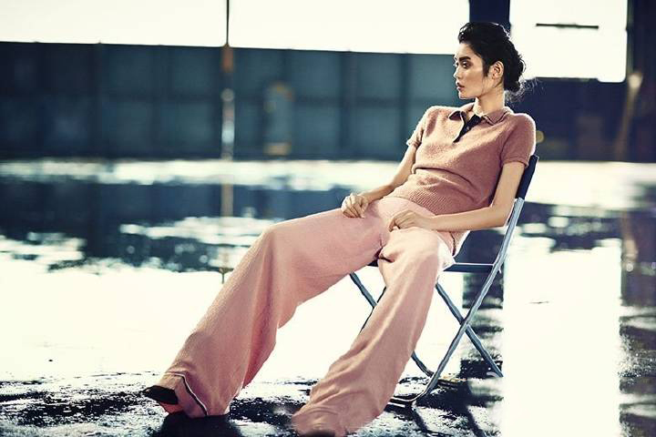
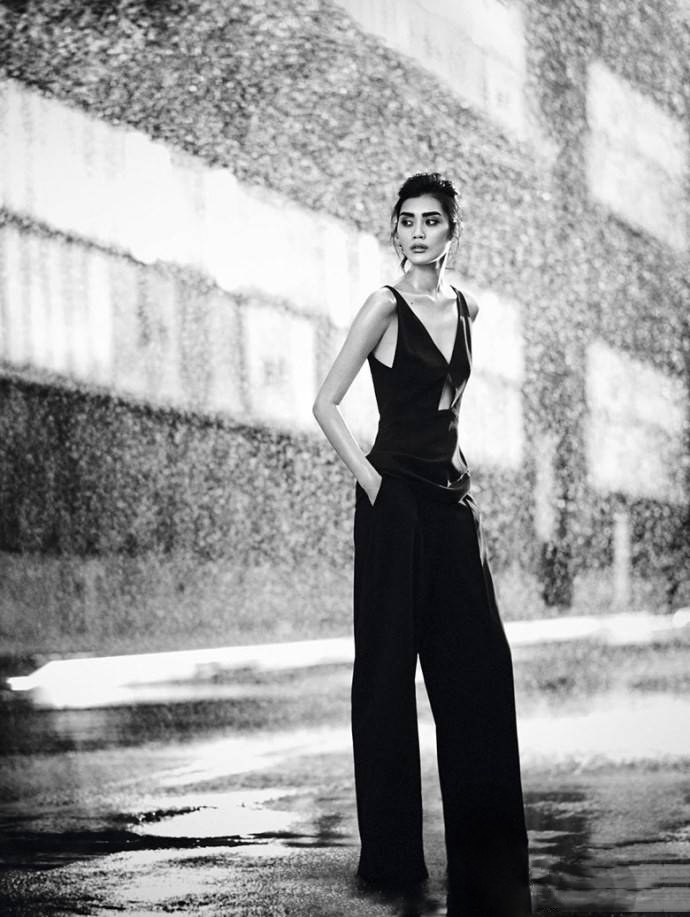

奚梦瑶，1989年3月8日出生于上海，毕业于东华大学07级服装设计与表演专业，中国内地女模特。
2009年奚梦瑶进入第26届世界精英模特大赛总决赛前15名，从此踏上模特之路。2010年参加巴黎秋冬高级定制，之后作为史上首位亚洲模特登上Givenchy全球广告。2011年加入华谊兄弟时尚。2012年任春夏上海时装周代言人。2013年11月作为第四位亚洲超模登上维多利亚的秘密秀场。12月2日参加伦敦举办的2014维多利亚的秘密年度内衣秀。2015年8月参加时尚互动真人秀《爱上超模》第二季。